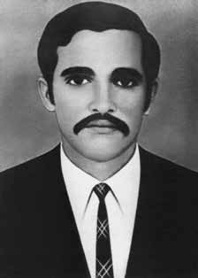

Luiz
Antônio
Santa
Barbára
CIRCUNSTÂNCIAS DA MORTE
Luiz Antonio Santa Bárbara foi morto por agentes do Estado brasileiro no dia 28 de agosto de 1971, em Brotas de Macaúbas, sertão da Bahia, durante a operação militar e policial que ficou conhecida como Pajussara. A localização de Lamarca naquela região envolveu colaboração do CIE e do CISA, conforme depoimento do brigadeiro João Paulo Moreira Burnier.iii A pacata população rural de Brotas de Macaúbas teve sua rotina alterada com a chegada de helicópteros e várias equipes de militares e policiais civis à região. O barulho das rajadas de metralhadoras, cenas como a de Olderico Barreto, irmão de Zequinha Barreto, e seu pai, José de Araújo Barreto, sendo torturados na frente de vizinhos e o sobrevoo de helicópteros com os mortos pendurados, para todos verem. Do cerco e investida sobre a casa da família Barreto, em Buriti Cristalino, na data de 28 de agosto de 1971, coordenados pelo Centro de Operações de Defesa Interna (CODI) da 6ª Região Militar – que matou os militantes Otoniel Campos Barreto e Luiz Antônio Santa Bárbara –, participaram as equipes OSCAR (do Departamento de Ordem Política e Social – DOPS de SP, tendo à frente o delegado Sérgio Paranhos Fleury), LIMA (CIE), MIKE (Cisa), FOX-TROT (CIE), HOTEL (Cisa) E CINÓFILAS (PM da Bahia). Os helicópteros permaneceram em Oliveira dos Brejinhos e foram acionados quando se rompeu o silêncio com o tiroteio na fazenda. Em depoimento à Comissão Nacional da Verdade (CNV) e à Comissão Estadual da Verdade “Rubens Paiva” de São Paulo (CEVSP), em 15 de julho de 2014, Olderico Barreto contou que: No dia 28 de agosto de 71 a gente amanheceu com nossa casa cercada. […] Eles chegaram de helicóptero, eles vieram de madrugada, a cavalo, à pé [ao povoado de Buriti Cristalino]. Esses que cercaram a nossa casa é que são responsáveis pela morte de Otoniel e Santa Bárbara. […] então quando eu sou preso, passo a ser torturado no pé de um morango, onde eles me misturavam com estrume de animal, e me reviravam e davam chutes na região dos rins, pra lá e pra cá, eles me quebraram neste dia [de forma] que eu tive muita dificuldade no dia seguinte de levantar sozinho, de entrar em um carro, de me curvar. […] eu vi meu pai, eles pondo o velho no pau-de-arara à noite. […] eles me vendaram os olhos e me pisavam, inclusive para descansar eles ficavam em cima do meu tórax. Em documento do Serviço Nacional de Informações (SNI), de 16 de setembro de 1971, localizado no Arquivo Nacional pela CNV, consta: No dia 31 de agosto 71 foi passado o seguinte telex […], informo CODI-6 apoiado elementos CIE, CISA e CENIMAR prossegue buscas agora área Brotas, Oliveira dos Brejinhos, Ibotirama, interior Bahia. Dia 28 agosto estourou aparelho rural sendo morto Luiz Antônio Santa Bárbara, codinomes „Ramos‟ e „Merenda‟ e Otoniel Campos Barreto, e ferido Aldemar Campos Barreto que reagiram [à] prisão. Dois últimos são irmãos [de] Jessé Campos Barreto, ainda foragido. Lamarca não foi visto, havendo indícios [de] sua presença. A versão apresentada à época pelos órgãos de repressão seria de que Luiz Antônio teria se suicidado com um tiro no próprio ouvido durante o cerco da polícia à Fazenda Buriti, quando soube da morte de seu companheiro Otoniel Barreto. Outra versão divulgada pelos órgãos de repressão é a de que ele teria morrido em um tiroteio, quando as forças policiais ainda não haviam assumido o controle total da área. No laudo de necropsia, de 29 de agosto de 1971, consta que o jovem foi “abatido quando reagira à bala contra a equipe encarregada de capturá-lo […], em operação realizada sob a coordenação CODI/6, conforme ofício […] produzido pelo Departamento de Polícia Federal”. Essa informação, registrando a falsa versão de morte em troca de tiros, conforme notícia publicada na Folha de S. Paulo em 15 de julho de 1996, já constava de documento assinado pelo coronel Luiz Arthur de Carvalho, então diretor da Polícia Federal na Bahia e integrante do Destacamento de Operações de Informações – Centro de Operações de Defesa Interna (DOI-CODI) da 6ª Região Militar, que encaminhou os corpos à perícia no Instituto Médico-Legal (IML). No laudo de necropsia, os peritos concluíram que Luiz Antônio “falecera em consequência de ruptura do cérebro por projétil de arma de fogo” e que “o agente quis o resultado”. Sabe-se, no entanto, que a Operação Pajussara foi de grande porte, impossibilitando resistência por parte dos moradores. O próprio relatório da Pajussara evidencia que a operação contou com diversos serviços de informações do Exército, da Marinha, da Aeronáutica, Polícias Militares, Polícia Federal e Polícias Civis, constituindo-se em uma operação de guerra que esperava encontrar na região um foco de guerrilha coordenado pelo ex-capitão Carlos Lamarca. O transporte das forças policiais e militares contou com a cooperação da Companhia Mineradora Boquira, que cedeu um avião e viaturas, garantindo o deslocamento aéreo e terrestre e permitindo a infiltração das equipes na área. Na avaliação do Exército, durante a operação houve um “perfeito entrosamento” entre “as Agências Centrais de Informações, Elementos Civis de São Paulo e Guanabara, Centro de Operações de Defesa Interna (CODI/2)”. O povoado de Buriti Cristalino foi ocupado por mais de cem homens armados – várias equipes, de militares e policiais civis – com metralhadoras e fuzis, além de helicópteros que sobrevoavam a casa. Segundo o relatório da operação, “como armamento, a metralhadora ou FAL foram usados ostensivamente, por ser impositivo, face ao inimigo. Este armamento é contra indicado apenas na fase de busca de informes, quando as equipes usam Revólver ou Pistola”. A primeira fase da operação, desenvolvida durante a madrugada, encontrou seis pessoas dormindo na casa da família Campos Barreto. O primeiro a ser morto foi Otoniel, atingido ao tentar impedir que seu pai, José de Araújo Barreto, de 64 anos, continuasse a ser torturado pelos policiais. Depois, Luiz Antônio Santa Bárbara foi assassinado dentro da casa da família Barreto. Olival Barreto, que à época tinha 11 anos, escondeu-se debaixo da cama do quarto junto com Jorge Tadeu, 16 anos, quando da invasão dos agentes à sua casa. De lá, escondido, presenciou a morte de Luiz Antônio Santa Bárbara, que caiu no chão, ao lado das crianças. Olival relembra o que presenciou: Nós dormíamos juntos, no mesmo quarto, porque a gente era como irmãos, ele tinha o dobro da minha idade, ele era da idade do Zequinha, ele era meu professor. Então a gente dividia o quarto. Só que esta noite, quando eu deitei, ele não estava. Aí quando foi tarde da noite, por volta de meia-noite, uma hora da manhã, ele chegou. […] Só que quando estava clareando, o José Tadeu, que era um primo que morava ao lado, ele viu a polícia chegando, muita gente montada a cavalo, fazendo o cerco ali, e ele conseguiu entrar na nossa casa antes que a polícia. […] O Tadeu devia ter uns 15 anos para 16. Ele acordou o Olderico e o Otoniel e foi lá para o quarto da varanda, onde eu estava com o Santa Bárbara e acordou a gente. Aí ele disse assim: “Roberto, a rua aí está cheia de polícia e eles estão perguntando onde está Zequinha”. Só que neste momento, já começou um tiroteio nos fundos da casa. E Roberto pegou um revólver que ele tinha escondido em uma mesinha e foi para o lado dos fundos da casa. […] Tinha muita fumaça, por causa dos tiros, estava aquele fumaceiro que a gente não enxergava nada. [Então] o Roberto voltou. Esse meu primo José Tadeu entrou debaixo da cama, a gente não tinha para onde ir. Aí eu tive a idéia de entrar atrás dele. O Santa Bárbara voltou e ficou em pé atrás da porta. Eu, como estava debaixo da cama, via o Santa Bárbara da cintura para baixo. […] Aí vieram umas pisadas, de um coturno, […] na direção do corredor até a porta do quarto, que estava semi-aberta. Aí ele deu um chute na porta, eu via o policial com a boca da metralhadora, e o via também só da cintura para baixo. Quando ele chutou a porta, já deu aquela explosão de tiro. Só que esse tiro não saiu daquela arma que estava apontada para mim. O tiro não foi do policial que arrombou a porta, saiu de outra arma. Neste momento, o Santa Bárbara caiu no chão. Ele caiu do meu lado, assim, me sujou de sangue. Aí o policial me viu e ordenou: “sai daí garoto”. Eu saí e o José Tadeu também saiu. A investida sobre Brotas de Macaúbas, a invasão da casa da família Barreto e a morte de Luiz Antônio Santa Bárbara são lembradas por um agente que participou da operação. Em depoimento à CNV, o coronel reformado Lúcio Valle Barroso, que era capitão da Aeronáutica à época da Operação Pajussara, disse que: [Em Brotas de Macaúbas] tinha um campo de pouso que os caras me deixaram lá com uns vinte soldados, um monte de cabos, soldados, sargentos. E nós fomos incorporados e o comando era do [major Nilton Albuquerque] Cerqueira. E nós fomos até a mata, a gente já tinha alguma informação. (…) a gente sabia o que a gente procurava. Nós começamos a fechar, fechar, fechar. Todo mundo à paisana, né? Lúcio Valle Barroso relata como foi a invasão da casa e a morte de Santa Bárbara: Quando nós chegamos lá na coisa, nós cercamos, era uma casa de esquina assim, então nós cercamos e chegamos perto, os caras pressentiram a chegada, então houve o tiroteio e tinha uma porta aqui pra trás e tinha uma janela aqui [faz gestos para mostrar onde estava em relação à casa]. Eu fui para essa janela aqui. Eu ia para essa porta, quando o sargento disse: “Capitão!”, aí me voltei e ele atirou. Atirou e como a casa era de adobe e esse fuzil nosso vara adobe fácil, matou o cara do outro lado. Aí eu fui pra cá, abri a janela, olhei e vi o outro cara lá, esse eu sei o nome, Santa Bárbara… (…) aí esse cara levou um tiro. Quando eu arrombei a porta, tirei a granada pra jogar, eu vi o cara levar o tiro e aí eu coloquei a granada. (…) O mais chato foi que quando eu arrombei a porta e fiquei olhando, e ele levou o tiro, quando eu cheguei em cima vi que tinha uma cama e debaixo da cama tinham crianças. Se eu jogasse a granada, eu matava as crianças. Felizmente isso não aconteceu. Depois que os corpos de Otoniel e de Luiz Antônio foram levados de helicóptero para Salvador (BA), os agentes policiais permaneceram instalados na propriedade, transformando a área em verdadeiro quartel-general das ações para a captura de Lamarca e Zequinha. Entre 1969 e 1971, os pais de Luiz Antônio haviam ficado sem notícias do filho primogênito. Em agosto daquele ano, receberam, pela imprensa – como o Jornal da Tarde, entre outros –, a informação de que o filho havia sido morto na Fazenda Buriti Cristalino, em Brotas de Macaúbas. Depois de muita insistência, conseguiram autorização para ver o corpo do filho. Em depoimento, Maria descreveu que Luiz Antônio tinha a mão perfurada à bala e disse não acreditar na versão oficial sobre suicídio. O pai, Deraldino, ao ver o corpo, disse: “Olha, meu filho ou […] foi assassinado de surpresa ou ele se rendeu, porque a perfuração da bala foi de frente pra trás, entrou na palma da mão e saiu nas costas da mão”. De acordo com o depoimento de Paulo Roberto Silva Lima, amigo da vítima, na data de 17 de julho de 1996, o pai de Luiz Antônio tinha percebido que “quando uma bala penetra em algum local, o furo é pequeno, quando ela sai o furo é bem maior”. Como registrado no banco de dados do jornal Folha de S. Paulo, o deputado Nilmário Miranda, representante da Câmara na CEMDP, apontou inconsistências na versão oficial sobre as mortes de Otoniel e de Luiz Antônio. O depoimento do policial federal Emanuel Cerqueira Campos à Auditoria Militar também contestou a versão oficial apresentada pelo Exército. Segundo ele, a arma encontrada com Luiz Antônio era um revólver calibre 32 e, conforme informações do coronel Luiz Arthur de Carvalho, a bala que o atingiu era calibre 38. Os restos mortais de Luiz Antônio Santa Bárbara foram enterrados no cemitério Piedade, em Feira de Santana (BA).
Luiz Antonio Santa Bárbara was killed by agents of the Brazilian State on August 28, 1971, in Brotas de Macaúbas, in the backlands of Bahia, during the military and police operation that became known as Pajussara. The location of Lamarca in that region involved collaboration between the CIE and CISA, according to the testimony of Brigadier João Paulo Moreira Burnier.iii The peaceful rural population of Brotas de Macaúbas had its routine changed with the arrival of helicopters and several teams of military and civil police officers to the region. The noise of machine gun fire, scenes like that of Olderico Barreto, Zequinha Barreto's brother, and his father, José de Araújo Barreto, being tortured in front of neighbors and the helicopters flying over with the dead hanging, for everyone to see. The siege and attack on the Barreto family home, in Buriti Cristalino, on August 28, 1971, coordinated by the Internal Defense Operations Center (CODI) of the 6th Military Region – which killed the militants Otoniel Campos Barreto and Luiz Antônio Santa Bárbara –, involved the OSCAR teams (from the Department of Political and Social Order – DOPS of SP, led by delegate Sérgio Paranhos Fleury), LIMA (CIE), MIKE (Cisa), FOX-TROT (CIE), HOTEL (Cisa) AND CINOFILAS (PM da Bahia). The helicopters remained in Oliveira dos Brejinhos and were called when the silence was broken by the shooting on the farm. In testimony to the National Truth Commission (CNV) and the “Rubens Paiva” State Truth Commission of São Paulo (CEVSP), on July 15, 2014, Olderico Barreto said that: On August 28, 71, we woke up with our house surrounded. […] They arrived by helicopter, they came at dawn, on horseback, on foot [to the village of Buriti Cristalino]. Those who surrounded our house are responsible for the deaths of Otoniel and Santa Bárbara. […] so when I am arrested, I am tortured on a strawberry tree, where they mix me with animal manure, and turn me over and kick me in the kidney area, back and forth, they broke me that day [so] that I had a lot of difficulty the next day getting up on my own, getting into a car, bending over. […] I saw my father, them putting the old man in the pau-de-arara at night. […] they blindfolded me and stepped on me, even to rest they stood on my chest. In a document from the National Information Service (SNI), dated September 16, 1971, located in the National Archives by the CNV, it states: On August 31, 71 the following telex was sent […], I inform CODI-6 supported by CIE, CISA and CENIMAR elements, the search is now continuing in the Brotas area, Oliveira dos Brejinhos, Ibotirama, interior of Bahia. On August 28th, a rural apparatus exploded, killing Luiz Antônio Santa Bárbara, codenames „Ramos‟ and „Merenda‟ and Otoniel Campos Barreto, and injured Aldemar Campos Barreto who reacted [to] the arrest. Two last ones are brothers [of] Jessé Campos Barreto, still at large. Lamarca was not seen, there being signs [of] his presence. The version presented at the time by the repression bodies was that Luiz Antônio committed suicide by shooting himself in the ear during the police siege of Fazenda Buriti, when he learned of the death of his companion Otoniel Barreto. Another version published by law enforcement agencies is that he died in a shootout, when the police forces had not yet taken full control of the area. in an operation carried out under the coordination of CODI/6, according to a letter […] produced by the Federal Police Department.” This information, recording the false version of death in an exchange of gunfire, according to news published in Folha de S. Paulo on July 15, 1996, was already contained in a document signed by Colonel Luiz Arthur de Carvalho, then director of the Federal Police in Bahia and member of the Information Operations Detachment – Internal Defense Operations Center (DOI-CODI) of the 6th Military Region, who sent the bodies for forensic examination at the Medical-Legal Institute (IML). In the autopsy report, experts concluded that Luiz Antônio “died as a result of rupture of the brain by a firearm projectile” and that “the agent wanted the result”. It is known, however, that Operation Pajussara was large-scale, making resistance from residents impossible. Pajussara's own report shows that the operation involved various intelligence services from the Army, Navy, Air Force, Military Police, Federal Police and Civil Police, constituting a war operation that hoped to find a guerrilla focus in the region coordinated by former captain Carlos Lamarca. The transport of police and military forces included the cooperation of Companhia Minadora Boquira, which provided a plane and vehicles, guaranteeing air and land movement and allowing teams to infiltrate the area. In the Army's assessment, during the operation there was “perfect harmony” between “the Central Information Agencies, Civil Elements of São Paulo and Guanabara, Internal Defense Operations Center (CODI/2)”. The village of Buriti Cristalino was occupied by more than a hundred armed men – several teams of military and civil police – with machine guns and rifles, in addition to helicopters that flew over the house. According to the operation report, "as weapons, the machine gun or FAL were used ostensibly, as they were imposing against the enemy. This weapon is only contraindicated in the information search phase, when teams use revolvers or pistols." The first phase of the operation, carried out during the early hours of the morning, found six people sleeping in the Campos Barreto family home. The first to be killed was Otoniel, who was shot while trying to prevent his father, José de Araújo Barreto, aged 64, from continuing to be tortured by the police. Afterwards, Luiz Antônio Santa Bárbara was murdered inside the Barreto family home. Olival Barreto, who was 11 years old at the time, hid under the bed in his room together with Jorge Tadeu, 16 years old, when the agents invaded his home. From there, hidden, he witnessed the death of Luiz Antônio Santa Bárbara, who fell to the ground, next to the children. Olival remembers what he witnessed: We slept together, in the same room, because we were like brothers, he was twice my age, he was Zequinha's age, he was my teacher. So we shared a room. But tonight, when I went to bed, he wasn't there. Then when it was late at night, around midnight, one o'clock in the morning, he arrived. […] But when it was getting light, José Tadeu, who was a cousin who lived next door, saw the police arriving, many people on horses, laying siege there, and he managed to enter our house before the police. […] Tadeu must have been around 15 or 16 years old. He woke up Olderico and Otoniel and went to the room on the balcony, where I was with Santa Bárbara and woke us up. Then he said: “Roberto, the street is full of police and they are asking where Zequinha is”. But at that moment, a shooting started at the back of the house. And Roberto took a revolver that he had hidden on a small table and went to the back of the house. […] There was a lot of smoke, because of the gunshots, there was so much smoke that we couldn't see anything. [Then] Roberto came back. My cousin José Tadeu got under the bed, we had nowhere to go. Then I had the idea of going after him. Santa Bárbara came back and stood behind the door. As I was under the bed, I could see Santa Bárbara from the waist down. […] Then there were some footsteps, from a combat boots, […] towards the corridor towards the bedroom door, which was half-open. Then he kicked the door, I saw the policeman with the muzzle of the machine gun, and I also saw him only from the waist down. When he kicked the door, there was that explosion of gunfire. But that shot didn't come from that gun that was pointed at me. The shot wasn't from the police officer who broke down the door, it came from another gun. At this moment, Santa Bárbara fell to the ground. He fell next to me, thus getting blood on me. Then the policeman saw me and ordered: “get out of there boy”. I left and José Tadeu also left. The attack on Brotas de Macaúbas, the invasion of the Barreto family home and the death of Luiz Antônio Santa Bárbara are remembered by an agent who participated in the operation. In a statement to the CNV, retired colonel Lúcio Valle Barroso, who was an Air Force captain at the time of Operation Pajussara, said that: [In Brotas de Macaúbas] there was an airfield and the guys left me there with about twenty soldiers, a bunch of corporals, soldiers, sergeants. And we were incorporated and command was [major Nilton Albuquerque] Cerqueira. And we went to the forest, we already had some information. (…) we knew what we were looking for. We started to close, close, close. Everyone in civilian clothes, right? Lúcio Valle Barroso reports on the invasion of the house and the death of Santa Bárbara: When we got there, we surrounded it, it was a house on the corner like that, so we surrounded it and got close, the guys sensed the arrival, then there was the shooting and there was a door behind us and there was a window here [makes gestures to show where he was in relation to the house]. I went to this window here. I was going to that door, when the sergeant said: “Captain!”, then I turned and he shot. He fired and as the house was made of adobe and our rifle was an easy adobe, he killed the guy on the other side. So I went here, opened the window, looked and saw the other guy there, I know his name, Santa Bárbara… (…) then this guy got shot. When I broke down the door, I took out the grenade to throw, I saw the guy get shot and then I put the grenade in. (…) The most annoying thing was that when I broke down the door and looked, and he was shot, when I got to the top I saw that there was a bed and under the bed there were children. If I threw the grenade, I would kill the children. Fortunately that didn't happen. After the bodies of Otoniel and Luiz Antônio were taken by helicopter to Salvador (BA), police agents remained installed on the property, transforming the area into a true headquarters for actions to capture Lamarca and Zequinha. Between 1969 and 1971, Luiz Antônio's parents had no news of their first-born son. In August of that year, they received information from the press – such as Jornal da Tarde, among others – that their son had been killed at Fazenda Buriti Cristalino, in Brotas de Macaúbas. After much insistence, they obtained permission to see their son's body. In her statement, Maria described that Luiz Antônio had his hand pierced by a bullet and said she did not believe the official version of suicide. The father, Deraldino, upon seeing the body, said: “Look, my son was either […] murdered by surprise or he surrendered, because the bullet went from front to back, entered the palm of his hand and exited the back of his hand.” According to the testimony of Paulo Roberto Silva Lima, a friend of the victim, on July 17, 1996, Luiz Antônio's father had noticed that “when a bullet penetrates somewhere, the hole is small, when it comes out the hole is much bigger”. As recorded in the Folha de S. Paulo newspaper database, deputy Nilmário Miranda, representative of the Chamber at CEMDP, pointed out inconsistencies in the official version about the deaths of Otoniel and Luiz Antônio. The testimony of federal police officer Emanuel Cerqueira Campos to the Military Audit also contested the official version presented by the Army. According to him, the weapon found with Luiz Antônio was a 32 caliber revolver and, according to information from Colonel Luiz Arthur de Carvalho, the bullet that hit him was 38 caliber. Luiz Antônio Santa Bárbara's remains were buried in the Piedade cemetery, in Feira de Santana (BA).
Luiz Antonio Santa Bárbara fue asesinado por agentes del Estado brasileño el 28 de agosto de 1971, en Brotas de Macaúbas, en el interior de Bahía, durante la operación militar y policial que pasó a conocerse como Pajussara. La ubicación de Lamarca en esa región implicó la colaboración entre la CIE y la CISA, según el testimonio del Brigadier João Paulo Moreira Burnier.iii La pacífica población rural de Brotas de Macaúbas vio su rutina cambiada con la llegada de helicópteros y varios equipos de policías militares y civiles a la región. El ruido de las ametralladoras, escenas como la de Olderico Barreto, hermano de Zequinha Barreto, y su padre, José de Araújo Barreto, siendo torturados delante de los vecinos y los helicópteros que sobrevolaban con los muertos colgados, a la vista de todos. El asedio y ataque a la casa de la familia Barreto, en Buriti Cristalino, el 28 de agosto de 1971, coordinado por el Centro de Operaciones de Defensa Interna (CODI) de la VI Región Militar – que mató a los militantes Otoniel Campos Barreto y Luiz Antônio Santa Bárbara –, involucró a los equipos OSCAR (del Departamento de Orden Político y Social – DOPS del SP, liderados por el delegado Sérgio Paranhos Fleury), LIMA (CIE), MIKE (Cisa), FOX-TROT (CIE), HOTEL (Cisa) Y CINOFILAS (PM da Bahia). Los helicópteros permanecieron en Oliveira dos Brejinhos y fueron llamados cuando se rompió el silencio por el tiroteo en la finca. En testimonio ante la Comisión Nacional de la Verdad (CNV) y la Comisión Estatal de la Verdad “Rubens Paiva” de São Paulo (CEVSP), el 15 de julio de 2014, Olderico Barreto dijo que: El 28 de agosto del 71, amanecimos con nuestra casa rodeada. […] Llegaron en helicóptero, llegaron de madrugada, a caballo, a pie [al pueblo de Buriti Cristalino]. Quienes rodearon nuestra casa son responsables de la muerte de Otoniel y Santa Bárbara. […] entonces cuando me arrestan, me torturan en un madroño, donde me mezclan con estiércol de animal, me dan vuelta y me patean en la zona de los riñones, de un lado a otro, ese día me rompieron [así] que al día siguiente tuve muchas dificultades para levantarme por mi cuenta, subirme a un auto, agacharme. […] Vi a mi padre, mientras metían al viejo en el pau-de-arara por la noche. […] me vendaron los ojos y me pisaron, incluso para descansar se pararon sobre mi pecho. En documento del Servicio Nacional de Información (SNI), de 16 de septiembre de 1971, ubicado en el Archivo Nacional por la CNV, señala: El 31 de agosto de 71 se envió el siguiente télex […], informo al CODI-6 apoyado por elementos del CIE, CISA y CENIMAR, la búsqueda continúa en la zona de Brotas, Oliveira dos Brejinhos, Ibotirama, interior de Bahía. El 28 de agosto, un aparato rural explotó matando a Luiz Antônio Santa Bárbara, alias 'Ramos' y 'Merenda' y Otoniel Campos Barreto, e hirió a Aldemar Campos Barreto quien reaccionó [a] la detención. Dos últimos son hermanos [de] Jessé Campos Barreto, aún prófugos. Lamarca no fue visto, habiendo señales [de] su presencia. La versión presentada en su momento por el órganos de represión fue que Luiz Antônio se suicidó disparándose en el oído durante el asedio policial a la Fazenda Buriti, cuando tuvo conocimiento de la muerte de su compañero Otoniel Barreto. Otra versión publicada por las fuerzas del orden es que murió en un tiroteo, cuando las fuerzas policiales aún no habían tomado el control total de la zona en un operativo realizado bajo la coordinación del CODI/6, según carta […] producida por el Departamento de Policía Federal”. Esta información, que recoge la versión falsa de la muerte en un intercambio de disparos, según noticia publicada en Folha de S. Paulo el 15 de julio de 1996, ya figuraba en un documento firmado por el coronel Luiz Arthur de Carvalho, entonces director de la Policía Federal en Bahía y miembro del Destacamento de Operaciones de Información – Centro de Operaciones de Defensa Interna (DOI-CODI) de la VI Región Militar, que envió los cadáveres para examen forense al Instituto Médico Legal (IML). En el informe de la autopsia, los peritos concluyeron que Luiz Antônio “murió como consecuencia de la rotura del cerebro por un proyectil de arma de fuego” y que “el agente quería el resultado”. Se sabe, sin embargo, que la Operación Pajussara fue a gran escala, lo que hizo imposible la resistencia de los residentes. El propio informe de Pajussara muestra que en el operativo participaron diversos servicios de inteligencia del Ejército, Armada, Fuerza Aérea, Policía Militar, Policía Federal y Policía Civil, constituyendo una operación de guerra que esperaba encontrar un foco guerrillero en la región coordinado por el ex capitán Carlos Lamarca. El transporte de fuerzas policiales y militares contó con la cooperación de la Companhia Minadora Boquira, que proporcionó un avión y vehículos, garantizando el movimiento aéreo y terrestre y permitiendo a los equipos infiltrarse en la zona. En la evaluación del Ejército, durante la operación hubo “perfecta sintonía” entre “las Agencias Centrales de Información, Elementos Civiles de São Paulo y Guanabara, Centro de Operaciones de Defensa Interna (CODI/2)”. La aldea de Buriti Cristalino fue ocupada por más de un centenar de hombres armados -varios equipos de policías militares y civiles- con ametralladoras y fusiles, además de helicópteros que sobrevolaban la casa. Según el informe de la operación, "como armas se utilizó ostensiblemente la ametralladora o FAL, ya que se imponen contra el enemigo. Esta arma sólo está contraindicada en la fase de búsqueda de información, cuando los equipos utilizan revólveres o pistolas". La primera fase del operativo, realizada durante las primeras horas de la mañana, encontró a seis personas durmiendo en la casa de la familia Campos Barreto. El primero en ser asesinado fue Otoniel, que recibió un disparo mientras intentaba impedir que su padre, José de Araújo Barreto, de 64 años, siguiera siendo torturado por la policía. Posteriormente, Luiz Antônio Santa Bárbara fue asesinado dentro de la casa de la familia Barreto. Olival Barreto, que entonces tenía 11 años, se escondió debajo de la cama de su habitación junto con Jorge Tadeu, de 16 años, cuando los agentes invadieron su domicilio. Desde allí, escondido, presenció la muerte de Luiz Antônio Santa Bárbara, quien cayó al suelo, junto a los niños. Olival recuerda lo que presenció: Dormíamos juntos, en el mismo cuarto, porque éramos como hermanos, él me doblaba la edad, tenía la edad de Zequinha, era mi maestro. Entonces compartimos una habitación. Pero esta noche, cuando me fui a la cama, él no estaba allí. Luego, cuando ya era tarde en la noche, alrededor de la medianoche, la una de la madrugada, llegó. […] Pero cuando ya amanecía, José Tadeu, que era un primo que vivía al lado, vio llegar la policía, mucha gente a caballo, sitiando allí, y logró entrar a nuestra casa antes que la policía. […] Tadeu debía tener unos 15 o 16 años. Despertó a Olderico y a Otoniel y fue al cuarto del balcón, donde yo estaba con Santa Bárbara y nos despertó. Luego dijo: “Roberto, la calle está llena de policías y preguntan dónde está Zequinha”. Pero en ese momento comenzó un tiroteo en la parte trasera de la casa. Y Roberto tomó un revólver que tenía escondido en una mesita y se dirigió al fondo de la casa. […] Había mucho humo, por los disparos, había tanto humo que no podíamos ver nada. [Entonces] Roberto regresó. Mi primo José Tadeu se metió debajo de la cama, no teníamos adónde ir. Entonces tuve la idea de ir tras él. Santa Bárbara volvió y se paró detrás de la puerta. Como estaba debajo de la cama, pude ver a Santa Bárbara de cintura para abajo. […] Luego se oyeron unos pasos, de botas militares, […] hacia el pasillo hacia la puerta del dormitorio, que estaba entreabierta. Luego pateó la puerta, vi al policía con la boca de la ametralladora, y también lo vi sólo de cintura para abajo. Cuando pateó la puerta, se escuchó una explosión de disparos. Pero ese disparo no vino de esa pistola que me apuntaba. El disparo no fue del policía que derribó la puerta, sino de otra arma. En ese momento, Santa Bárbara cayó al suelo. Cayó a mi lado, manchándome así la sangre. Entonces el policía me vio y me ordenó: “sal de ahí muchacho”. Yo me fui y José Tadeu también se fue. El ataque a Brotas de Macaúbas, la invasión a la casa de la familia Barreto y la muerte de Luiz Antônio Santa Bárbara son recordados por un agente que participó del operativo. En declaraciones a la CNV, el coronel retirado Lúcio Valle Barroso, que era capitán de la Fuerza Aérea en el momento de la Operación Pajussara, dijo que: [En Brotas de Macaúbas] había un aeródromo y los muchachos me dejaron allí con una veintena de soldados, un grupo de cabos, soldados, sargentos. Y nos incorporaron y el mando era [el mayor Nilton Albuquerque] Cerqueira. Y nos fuimos al bosque, ya teníamos información. (…) sabíamos lo que buscábamos. Empezamos a cerrar, cerrar, cerrar. Todos vestidos de civil, ¿verdad? Lúcio Valle Barroso relata sobre la invasión a la casa y la muerte de Santa Bárbara: Cuando llegamos, la rodeamos, era una casa así de esquina, entonces la rodeamos y nos acercamos, los muchachos sintieron la llegada, luego hubo un tiroteo y detrás de nosotros había una puerta y aquí había una ventana [hace gestos para mostrar dónde estaba con relación a la casa]. Fui a esta ventana aquí. Iba hacia esa puerta, cuando el sargento dijo: “¡Capitán!”, entonces me giré y disparó. Disparó y como la casa era de adobe y nuestro rifle era de adobe fácil, mató al tipo que estaba al otro lado. Entonces me fui para acá, abrí la ventana, miré y vi al otro tipo ahí, sé su nombre, Santa Bárbara… (…) entonces a este tipo le dispararon. Cuando derribé la puerta saqué la granada para tirar, vi que le dispararon al tipo y luego le metí la granada. (…) Lo más molesto fue que cuando derribé la puerta y miré, y le dispararon, cuando llegué arriba vi que había una cama y debajo de la cama había niños. Si arrojara la granada, mataría a los niños. Afortunadamente eso no sucedió. Después de que los cuerpos de Otoniel y Luiz Antônio fueran trasladados en helicóptero a Salvador (BA), agentes policiales permanecieron instalados en el inmueble, transformando la zona en un verdadero cuartel general de las acciones de captura de Lamarca y Zequinha. Entre 1969 y 1971, los padres de Luiz Antônio no tuvieron noticias de su primogénito. En agosto de ese año, recibieron información de la prensa –como el Jornal da Tarde, entre otros– de que su hijo había sido asesinado en la Fazenda Buriti Cristalino, en Brotas de Macaúbas. Después de mucha insistencia, obtuvieron permiso para ver el cuerpo de su hijo. En su declaración, María describió que Luiz Antônio fue atravesado por una bala en la mano y dijo que no creía en la versión oficial del suicidio. El padre Deraldino, al ver el cuerpo, dijo: “Mire, mi hijo o […] fue asesinado por sorpresa o se entregó, porque la bala fue de adelante hacia atrás, entró por la palma de la mano y salió por el dorso de la mano”. Según el testimonio de Paulo Roberto Silva Lima, amigo de la víctima, el 17 de julio de 1996, el padre de Luiz Antônio había notado que “cuando una bala penetra en alguna parte, el agujero es pequeño, cuando sale el agujero es mucho más grande”. Según consta en la base de datos del diario Folha de S. Paulo, el diputado Nilmário Miranda, representante de la Cámara en el CEMDP, señaló inconsistencias en la versión oficial sobre las muertes de Otoniel y Luiz Antônio. El testimonio del policía federal Emanuel Cerqueira Campos ante la Auditoría Militar también cuestionó la versión oficial presentada por el Ejército. Según él, el arma encontrada a Luiz Antônio era un revólver calibre 32 y, según información del coronel Luiz Arthur de Carvalho, la bala que lo alcanzó era calibre 38. Los restos de Luiz Antônio Santa Bárbara fueron enterrados en el cementerio de Piedade, en Feira de Santana (BA).